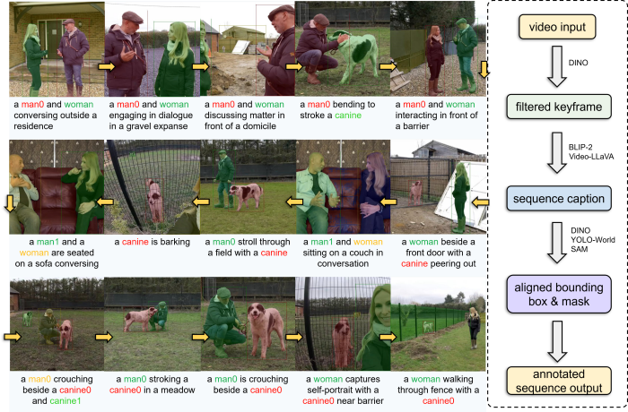
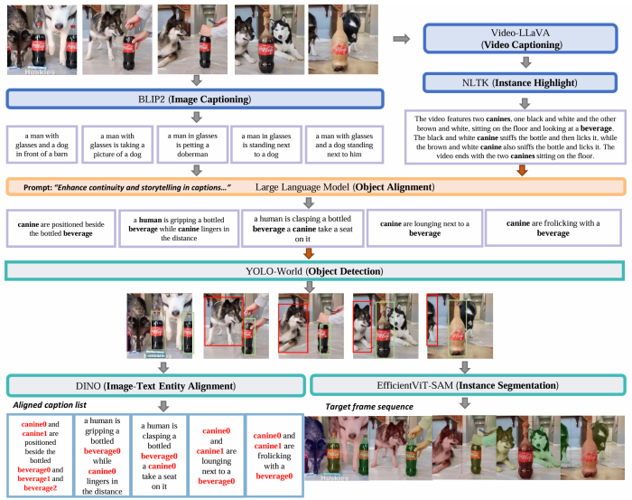

Openstory++ : A Large-scale Dataset and Benchmark for Instance-aware Open-domain Visual Storytelling
The visualization of our dataset. On the left is a data case with visual annotation that corresponds to each entity word in the sentence, where different color stands for different instance visual annotations, and on the right is the general pipeline of our dataset annotation process.
AbstractRecent image generation models excel at creating high-quality images from brief captions. However, they fail to maintain consistency of multiple instances across images when encountering lengthy contexts. This inconsistency is largely due to in existing training datasets the absence of granular instance feature labeling in existing training datasets. To tackle these issues, we introduce Openstory++, a large scale dataset combining additional instance-level annotations with both images and text. This dataset can be utilized to train multi-modal generated models, allowing for the training of instance-focused story visualization models. Furthermore, we develop a tailored training methodology that emphasizes entity-centric image-text generation, ensuring that the models learn to effectively interweave visual and textual information. Specifically, Openstory++ streamlines the process of keyframe extraction from open-domain videos, employing vision-language models to generate captions that are then polished by a large language model for narrative continuity. It surpasses previous datasets by offering a more expansive open-domain resource, which incorporates automated captioning, high-resolution imagery tailored for instance count, and extensive frame sequences for temporal consistency. Additionally, we present Cohere-Bench, a pioneering benchmark framework for evaluating the image generation tasks when long multimodal context is provided, including the ability to keep the background, style, instances in the given context coherent. Compared to existing benchmarks, our work fills critical gaps in multi-modal generation, propelling the development of models that can adeptly generate and interpret complex narratives in open-domain environments. Experiments conducted within Cohere-Bench confirm the superiority of Openstory++ in nurturing high-quality visual storytelling models, enhancing their ability to address sophisticated and open-domain generation tasks.
Method This figure showcases the workflow of our pipeline. After obtaining a sequence of frames devoid of redundancy, we first utilized BLIP2 to generate basic image captions. Subsequently, Video-LLaVA was employed to produce a sequence of captions that encapsulate the narrative flow. Guided by the sequence caption, a LLM was prompted to align the entities in the image captions, thus enhancing the narrative coherence across consecutive frames. Next, YOLO-World was applied to detect bounding boxes for the entities. To ensure that labels for the same entities across frames are unique and consistent, we blended the bounding box labels with the assistance of Dino and a facial feature module. Finally, we employed EfficientVIT-SAM to obtain the masks for the entities, thereby providing a comprehensive understanding of the spatial extent and characteristics of each entity within the frames.